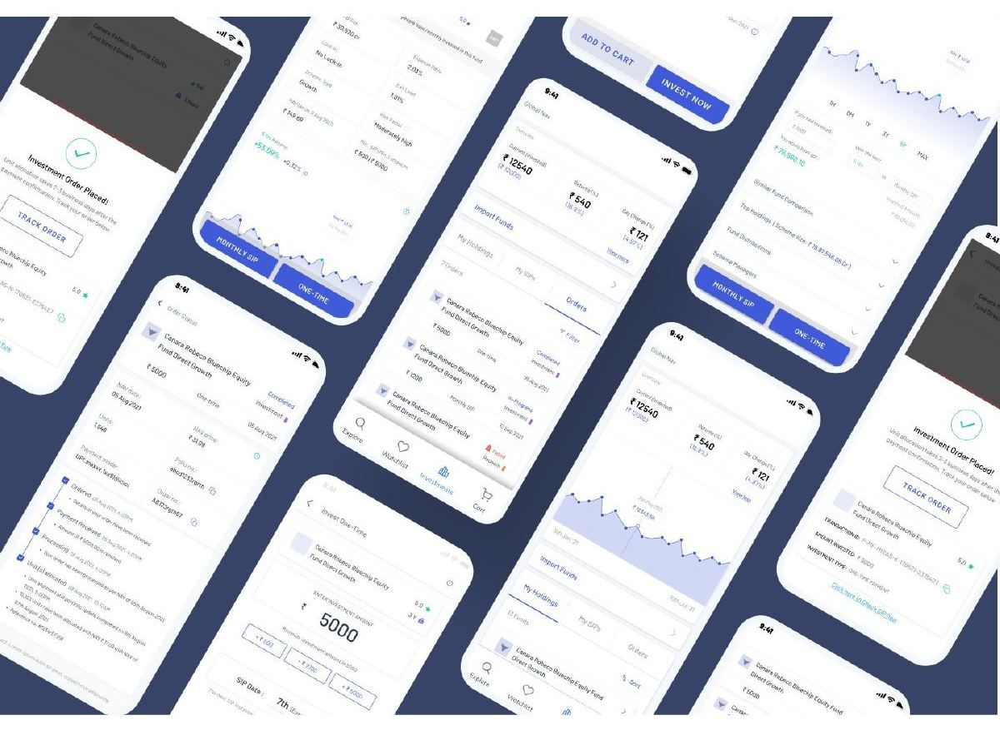
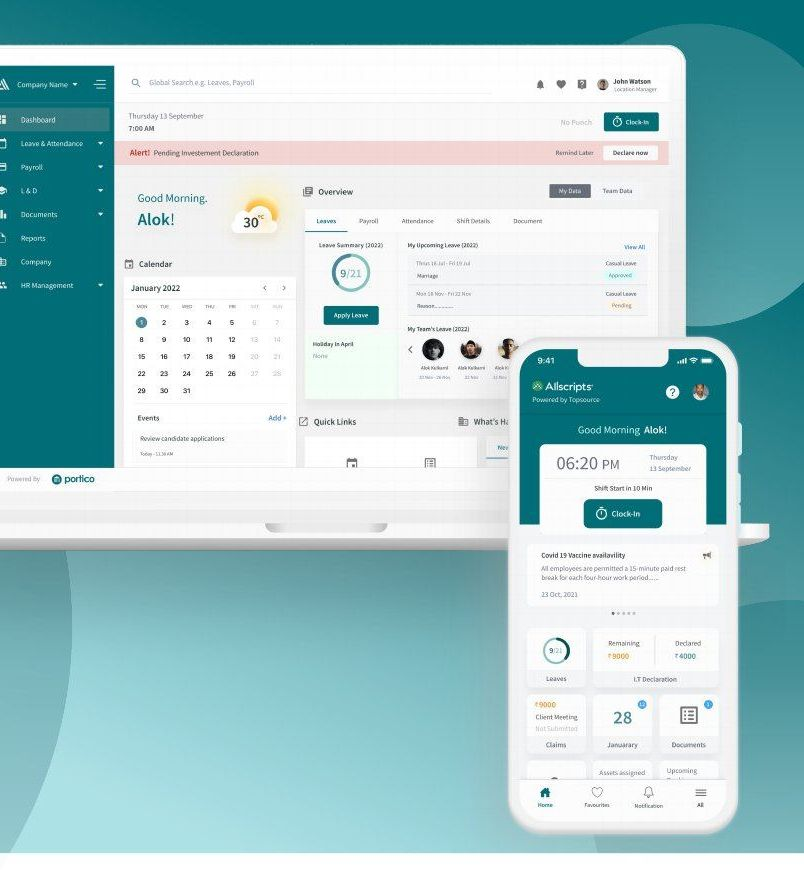
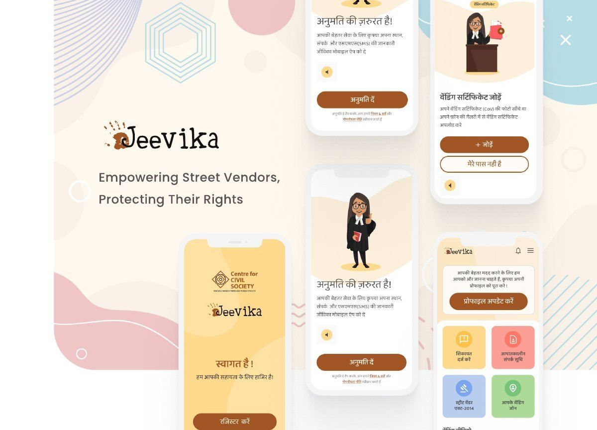
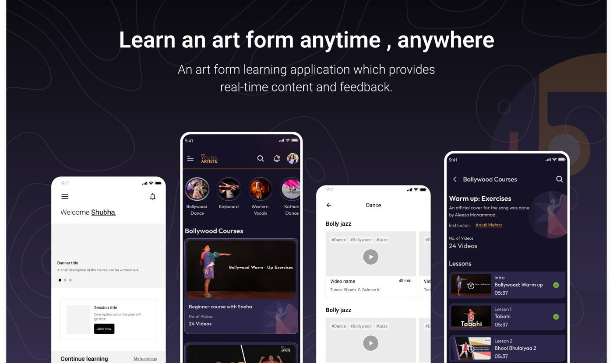
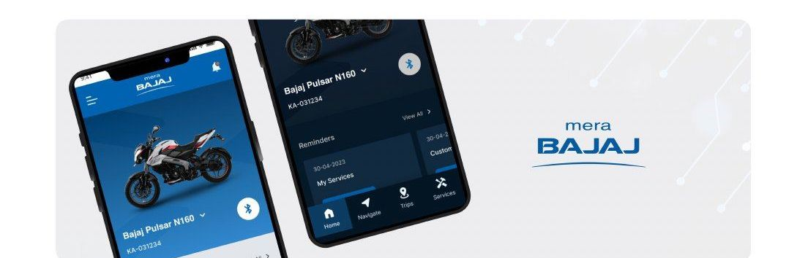
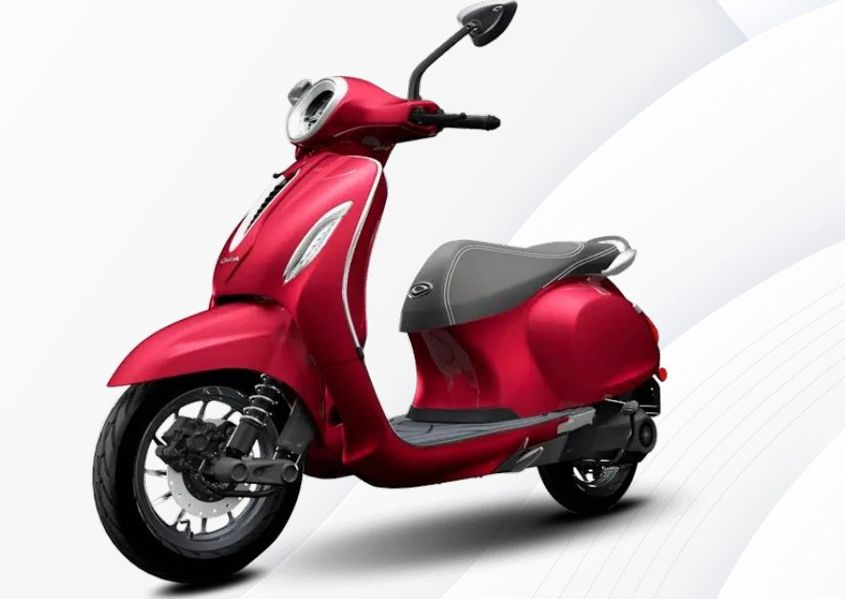
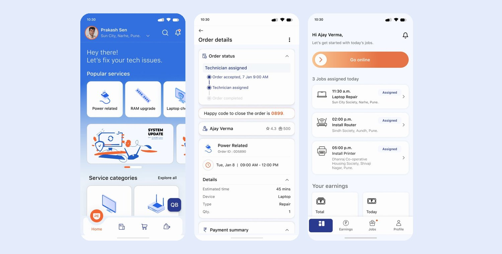
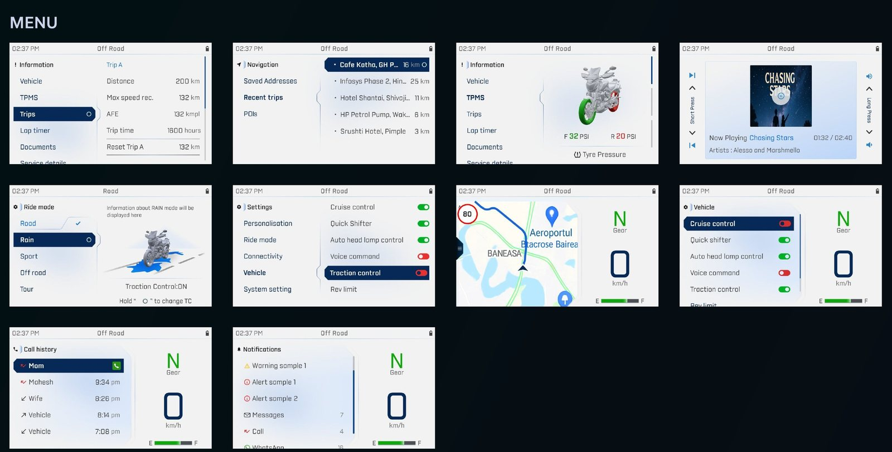

System Engineer
Oct 2015 – Oct 2018Infosys · Bengaluru
- Designed network configurations for client environments: connectivity, performance and security.
Senior UX Designer · Mumbai
Motorcycle clusters read at speed, clinical devices used by paramedics, legal help for street vendors who can’t read English. 8 years in UX across automotive HMI, healthcare, fintech and B2B SaaS, after 3 years as an engineer at Infosys.
Infosys · Bengaluru
Infosys · Bengaluru
White Digital · Mumbai
PeepalDesign · Mumbai (remote)
UX lead on client products in automotive, healthcare, fintech and SaaS. Each project below follows the last.
Research-led design of a mutual fund module for new and seasoned investors. Led a team of two; paused before development when the client froze outside work.

Turned an organically grown HRMS into a consistent web and mobile SaaS product. 30% fewer steps on core admin tasks.

A Hindi-first app and NGO dashboard for low-literacy vendors to know their rights, call for help and track legal cases, followed by an admin panel for CCS and vendor associations. Both are live.

A learning app for music, dance and instruments, built around learning paths and motivation. Led a team of two; put on hold by the client before launch.

Redesigned Bajaj’s owner app for Pulsar riders: pairing, trips, navigation and service. Live on the App Store and Google Play for about two years.

Worked with another designer on the scooter’s 5” display. My part: the menu structure and how navigation behaves while riding and when stopped. Shipped on Chetak EV scooters.

Companion app for remote vitals and a modernised device UI built to homologation and accessibility standards, with a UI system shared across clinical devices. Tested with paramedics.
Under NDA · happy to walk through it in an interview
UX for an analytics-driven clinical management module, aimed at reducing task friction and data-entry errors.
Under NDA · happy to walk through it in an interview
Live with 1,000+ users. Led the customer and technician apps: plain-language booking, upfront pricing, part approvals and a happy code to close every job.

Led a team of 4 on the cluster’s information architecture, menus and navigation. Chosen over a competing team’s design; shipped first on the Pulsar N160 SS in 2026.

A focused 2–4 week visual refresh of the Chetak owner app.
Restructured navigation and IA across regional sites, with a modular pattern library.
Built GapScan, an internal AI tool that audits products for UX gaps, and an app that extracts a live website’s design system. Created Claude and ChatGPT skills for the team, designed AI apps for clients, and redesigned PeepalDesign’s website.